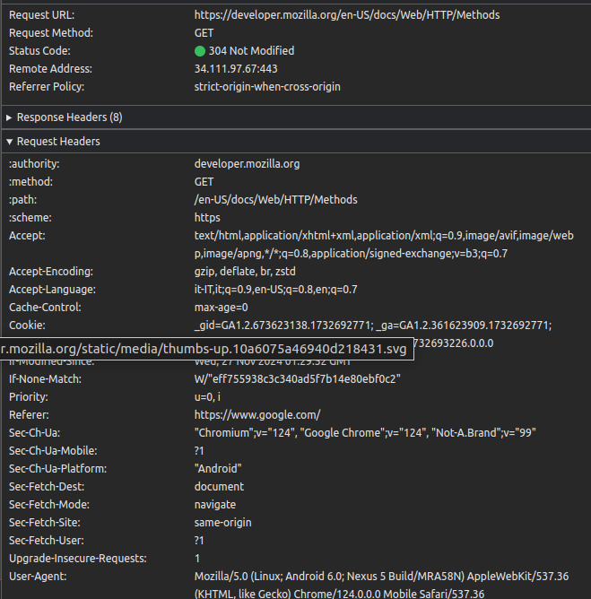

HTTP
Che cos'è
L'HTTP è un protocollo del livello 7 della pila iso/osi, si usa nell'archittetura client/server.Quando il client manda una richiesta per una pagina web, il server risponde.Il suo nome ha origina dal fatto che trasporta immagini,testo,video e audio. Quando le risorse del client vengono soddisfatte il server chiude la connesione col client. Solitamente quando si manda una richiesta un server troveremo all'inizio, l' URL della pagina web che vogliamo, il metodo usato e una sezione degli header
(immagine presa aprendo uan pagina web)
I metodi dell'HTTP
Questi sono i metodi base dell'http per vedere altri metodi puoi andare qui
Il metodo GET permette di richiedere una risorsa dal server. Questo serve per ottenere quello che indicato nell'URL, un esempio:youtube.com.Il metodo GET prendere la risorsa indicata dall'URL, quindi la pagina di youtube.
il metodo POST invece permette di inviare dati al server.Un esempio molto semplice è quando ci registriamo o facciamo il login su un sito dove mandiamo al server la nostra e-mail e password e altri dati per registrarci/verificarci.
Il metodo PUT crea o modifica i dati nel server. Un esempio potrebbe essere quando cambiamo la nostra e-mail per un account,lo username.
Il metodo DELETE come dice il nome permette di cancellare delle risorse nel server. Un esempio può essere cancellare una repo nel nostro account github, i dati e la pagina web per vedere i contenuti della repo non esitono più.